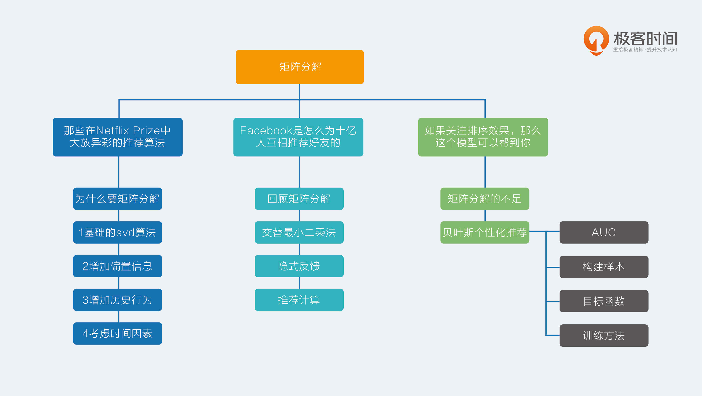

- 00 开篇词 用知识去对抗技术不平等.md
- 01 你真的需要个性化推荐系统吗_.md
- 02 个性化推荐系统有哪些绕不开的经典问题？.md
- 03 这些你必须应该具备的思维模式.md
- 04 画鬼容易画人难：用户画像的“能”和“不能”.md
- 05 从文本到用户画像有多远.md
- 06 超越标签的内容推荐系统.md
- 07 人以群分，你是什么人就看到什么世界.md
- 08 解密“看了又看”和“买了又买”.md
- 09 协同过滤中的相似度计算方法有哪些.md
- 10 那些在Netflix Prize中大放异彩的推荐算法.md
- 11 Facebook是怎么为十亿人互相推荐好友的.md
- 12 如果关注排序效果，那么这个模型可以帮到你.md
- 13 经典模型融合办法：线性模型和树模型的组合拳.md
- 14 一网打尽协同过滤、矩阵分解和线性模型.md
- 15 深度和宽度兼具的融合模型 Wide and Deep.md
- 16 简单却有效的Bandit算法.md
- 17 结合上下文信息的Bandit算法.md
- 18 如何将Bandit算法与协同过滤结合使用.md
- 19 深度学习在推荐系统中的应用有哪些_.md
- 20 用RNN构建个性化音乐播单.md
- 21 构建一个科学的排行榜体系.md
- 22 实用的加权采样算法.md
- 23 推荐候选池的去重策略.md
- 24 典型的信息流架构是什么样的.md
- 25 Netflix个性化推荐架构.md
- 26 总览推荐架构和搜索、广告的关系.md
- 27 巧妇难为无米之炊：数据采集关键要素.md
- 28 让你的推荐系统反应更快：实时推荐.md
- 29 让数据驱动落地，你需要一个实验平台.md
- 30 推荐系统服务化、存储选型及API设计.md
- 31 推荐系统的测试方法及常用指标介绍.md
- 32 道高一尺魔高一丈：推荐系统的攻防.md
- 33 和推荐系统有关的开源工具及框架介绍.md
- 34 推荐系统在互联网产品商业链条中的地位.md
- 35 说说信息流的前世今生.md
- 36 组建推荐团队及工程师的学习路径.md
- 加餐 推荐系统的参考阅读.md
- 结束语 遇“荐”之后，江湖再见.md
12 如果关注排序效果，那么这个模型可以帮到你
矩阵分解在推荐系统中的地位非常崇高，恐怕本专栏介绍的其他算法模型都不能轻易地撼动它。
它既有协同过滤的血统，又有机器学习的基因，可以说是非常优秀了；但即便如此，传统的矩阵分解无论是在处理显式反馈，还是处理隐式反馈都让人颇有微词，这一点是为什么呢？
矩阵分解的不足
前面我讲过的两种矩阵分解，本质上都是在预测用户对一个物品的偏好程度，哪怕不是预测评分， 只是预测隐式反馈，也难逃这个事实，因为算法展现出来的目标函数就出卖了这一切。
得到这样的矩阵分解结果后，常常在实际使用时，又是用这个预测结果来排序。所以，从业者们口口声声宣称想要模型的预测误差最小化，结果绕了一大圈最后还是只想要一个好点的排序，让人不禁感叹：人心总是难测。
这种针对单个用户对单个物品的偏好程度进行预测，得到结果后再排序的问题，在排序学习中的行话叫做point-wise，其中point意思就是：只单独考虑每个物品，每个物品像是空间中孤立的点一样。
与之相对的，还有直接预测物品两两之间相对顺序的问题，就叫做pair-wise，pair，顾名思义就是成对成双，也许恐怕这类模型对单身的人士不是很友好。
前面讲的矩阵分解都属于point-wise模型。这类模型的尴尬是：只能收集到正样本，没有负样本，于是认为缺失值就是负样本，再以预测误差为评判标准去使劲逼近这些样本。逼近正样本没问题，但是同时逼近的负样本只是缺失值而已，还不知道真正呈现在用户面前，到底是不喜欢还是喜欢呢？
虽然这些模型采取了一些措施来规避这个问题，比如负样本采样，但是尴尬还是存在的，为了排序而绕路也是事实。
既然如此，能不能直面问题，采用pair-wise来看待矩阵分解呢？当然能，不然我也不会写出这一篇专栏文章了。
其实人在面对选择时，总是倾向矮子中选高个子，而不是真的在意身高到底是不是180，因此，更直接的推荐模型应该是：能够较好地为用户排列出更好的物品相对顺序，而非更精确的评分。
这个问题已经有可爱的从业者们提出了方法，就是本文的主角：贝叶斯个性化排序，简称BPR模型。下面，我就带你一探这个模型的究竟。
贝叶斯个性化排序
在前面的专栏文章中，有一个词叫做均方根误差，被我提过多次，用于评价模型预测精准程度的。那么现在要关注的是相对排序，用什么指标比较好呢？答案是AUC，AUC全称是Area Under Curve，意思是曲线下的面积，这里的曲线就是 ROC 曲线。
AUC
但是，我不打算继续解释什么是 ROC 曲线了，那是它的原始定义，而我想跟你悄悄说的是另一件事，AUC这个值在数学上等价于：模型把关心的那一类样本排在其他样本前面的概率。最大是1，完美结果，而0.5就是随机排列，0就是完美地全部排错。
听到这个等价的AUC解释，你是不是眼前一亮？这个非常适合用来评价模型的排序效果，比如说，得到一个推荐模型后，按照它计算的分数，能不能把用户真正想消费的物品排在前面？这在模型上线前是可以用日志完全计算出来的。
AUC怎么计算呢？一般步骤如下。
- 用模型给样本计算推荐分数，比如样本都是用户和物品这样一对一对的，同时还包含了有无反馈的标识；
- 得到打过分的样本，每条样本保留两个信息，第一个是分数，第二个是0或者1，1表示用户消费过，是正样本，0表示没有，是负样本；
- 按照分数对样本重新排序，降序排列；
- 给每一个样本赋一个排序值，第一位 r1 = n，第二位 r2 = n-1，以此类推；其中要注意，如果几个样本分数一样，需要将其排序值调整为他们的平均值；
- 最终按照下面这个公式计算就可以得到AUC值。
我在文稿中放了这个公式，你可以点击查看。
\[AUC = \\frac{\\sum_{i\\in(样本)}{r_{i}} - \\frac{M\\times{(M+1)}}{2}}{M\\times{N}}\]
这个公式看上去复杂，其实很简单，由两部分构成：
第一部分： 分母是所有我们关心的那类样本，也就是正样本，有M个，以及其他样本有N个，这两类样本相对排序总共的组合可能性，是M x N；
第二部分： 分子也不复杂，原本是这样算的：第一名的排序值是r1，它在排序上不但比过了所有的负样本，而且比过了自己以外的正样本。
但后者是自己人，所以组合数要排除，于是就有n - M种组合，以此类推，排序值为rM的就贡献了rM - 1，把这些加起来就是分子。
关于AUC，越接近1越好是肯定的，但是并不是越接近0就越差，最差的是接近0.5，如果AUC很接近0的话，只需要把模型预测的结果加个负号就能让AUC接近1，具体的原因自行体会。
好了，已经介绍完排序的评价指标了，该主角出场了，BPR模型，它提出了一个优化准则和学习框架，使得原来传统的矩阵分解放进来能够焕发第二春。
那到底BPR做了什么事情呢？主要有三点：
- 一个样本构造方法；
- 一个模型目标函数；
- 一个模型学习框架。
通过这套三板斧，便可以脱离评分预测，来做专门优化排序的矩阵分解。下面详细说说这三板斧。
构造样本
前面介绍的矩阵分解，在训练时候处理的样本是：用户、物品、反馈，这样的三元组形式。
其中反馈又包含真实反馈和缺失值，缺失值充当的是负样本职责。BPR则不同，提出要关心的是物品之间对于用户的相对顺序，于是构造的样本是：用户、物品1、物品2、两个物品相对顺序，这样的四元组形式，其中，“两个物品的相对顺序”，取值是：
- 如果物品1是消费过的，而物品2不是，那么相对顺序取值为1，是正样本；
- 如果物品1和物品2刚好相反，则是负样本；
- 样本中不包含其他情况：物品1和物品2都是消费过的，或者都是没消费过的。
这样一来，学习的数据是反应用户偏好的相对顺序，而在使用时，面对的是所有用户还没消费过的物品，这些物品仍然可以在这样的模型下得到相对顺序，这就比三元组point-wise样本要直观得多。
目标函数
现在，每条样本包含的是两个物品，样本预测目标是两个物品的相对顺序。按照机器学习的套路，就该要上目标函数了。
要看BPR怎么完成矩阵分解，你依然需要像交替最小二乘那样的思想。
先假装矩阵分解结果已经有了，于是就计算出用户对于每个物品的推荐分数，只不过这个推荐分数可能并不满足均方根误差最小，而是满足物品相对排序最佳。
得到了用户和物品的推荐分数后，就可以计算四元组的样本中，物品1和物品2的分数差，这个分数可能是正数，也可能是负数，也可能是0。
你和我当然都希望的情况是：如果物品1和物品2相对顺序为1，那么希望两者分数之差是个正数，而且越大越好；如果物品1和物品2的相对顺序是0，则希望分数之差是负数，且越小越好。
用个符号来表示这个差：Xu12，表示的是对用户u，物品1和物品2的矩阵分解预测分数差。然后再用 sigmoid 函数把这个分数差压缩到0到1之间。
\[\\Theta = \\frac{1}{1 + e^{-(X_{u12})}}\]
也其实就是用这种方式预测了物品1排在物品2前面的似然概率，所以最大化交叉熵就是目标函数了。
目标函数通常还要防止过拟合，加上正则项，正则项其实认为模型参数还有个先验概率，这是贝叶斯学派的观点，也是BPR这个名字中“贝叶斯”的来历。
BPR认为模型的先验概率符合正态分布，对应到正则化方法就是L2正则，这些都属于机器学习的内容，这里不展开讲。
我来把目标函数写一下：
\[\\prod_{u,i,j}{p(i>_ {u}j | \\theta)p(\\theta)}\]
所有样本都计算：模型参数先验概率p theta，和似然概率的乘积，最大化这个目标函数就能够得到分解后的矩阵参数，其中theta就是分解后的矩阵参数。
最后说一句，把这个目标函数化简和变形后，和把AUC当成目标函数是非常相似的，也正因为如此，BPR模型的作者敢于宣称该模型是为AUC而生的。
训练方法
有了目标函数之后，就要有请训练方法了。显然是老当益壮的梯度下降可以承担这件事，梯度下降又有批量梯度和随机梯度下降两个选择，前者收敛慢，后者训练快却不稳定。因此BPR的作者使用了一个介于两者之间的训练方法，结合重复抽样的梯度下降。具体来说是这样做的：
- 从全量样本中有放回地随机抽取一部分样本；
- 用这部分样本，采用随机梯度下降优化目标函数，更新模型参数；
- 重复步骤1，直到满足停止条件。
这样，就得到了一个更符合推荐排序要求的矩阵分解模型了。
总结
今天是矩阵分解三篇的最后一篇，传统的矩阵分解，无论是隐式反馈还是显式反馈，都是希望更加精准地预测用户对单个物品的偏好，而实际上，如果能够预测用户对物品之间的相对偏好，则更加符合实际需求的直觉。
BPR就是这样一整套针对排序的推荐算法，它事实上提出了一个优化准则和一个学习框架，至于其中优化的对象是不是矩阵分解并不是它的重点。
但我在这里结合矩阵分解对其做了讲解，同时还介绍了排序时最常用的评价指标AUC及其计算方法。
你在看了BPR算法针对矩阵分解的推荐计算过程之后，试着想一想，如果不是矩阵分解，而是近邻模型，那该怎么做？欢迎留言给我，一起聊聊。

© 2019 - 2023 Liangliang Lee. Powered by gin and hexo-theme-book.